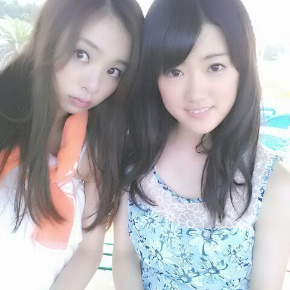

こんばんわ !
ろってぃーだよ.♪
眉 困ったちゃん。
ろってぃ− 眉がよく動くんだよね*´`*
元気なのはいいけどさ
安定してほしいよ、まったく眉毛ちゃん。
はいっ、 また皆のコメントがろってぃ−の左胸に
しっかりささってるナウです(*´・ω・*)
ありがとう。
そして、そう 「面白かった、面白かった〜」とゆうコメントも多かったのですが、、『NOGBINGO!2』のことですよね...
NOGIBINGO!2は 場所によって放送されてる所と
されてない所があるから、説明しちゃいますね♪
正月 お墓参りに行った時に
「 ケサラン・パサラン 」 ってゆう
タンポポの綿毛の様なものが
ろってぃーの目の前に現れて、
それは めったに見ることができない植物で
ケサラン・パサランを見るといいことが起きるらしく
「 植物の妖精 」とも言われているらしいです.
そして ケサラン・パサランを鼻に入れて赤毛のアンにかけて
「 鼻毛のアン〜\(о´∀`о)/ 」って言ったんですね〜...。
それで 自分で笑ったら 鼻息で飛んでった.とゆう
ムービーが 乃木BINGOでオンエアされました\*´ω`*/
生駒ちゃんが収録後も
鼻毛のアン 鼻毛のアン ってゆって笑ってくれました.♪
気に入ってくれて ありがとう。笑
嬉しゅう キモチ !!
今日は 『 乃木坂って、どこ？』ですね.♪
ろってぃーも 皆と一緒に リアルタイムで
見たいと思います(#^.^#)
ろってぃーのことちゃんと見ててね？
・・・・・・・・

ひなちま.♪ happy birth day (*´ω｀*)☆ミ
ひなも もう 16歳ね ! !
あなたは大人っぽいですけれども
これでも 私は２歳 歳上...ぅん
何か困った時は 何でも相談してください.
ひな大好きだよ!!
のし。 ろってぃーでした(#^.^#)